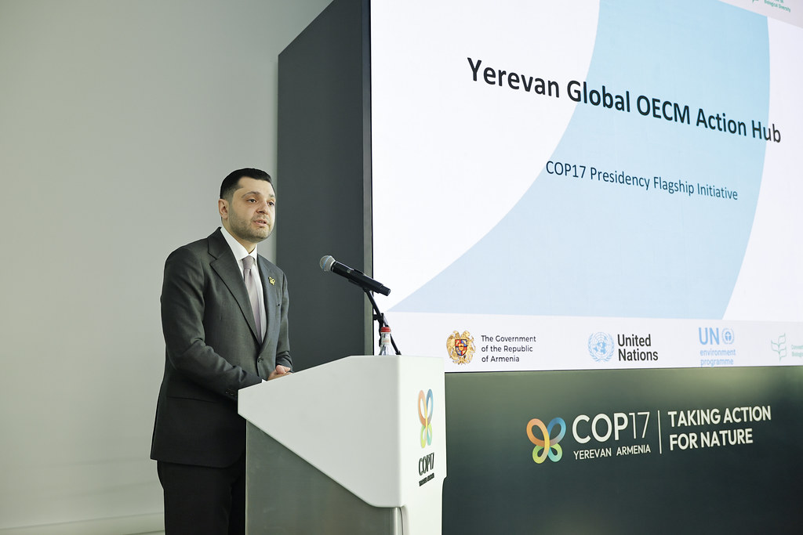

Wednesday was the second day of the high-level segment at COP17. Ministers kept speaking, working groups kept clearing text, and the hardest political question, the global review of progress, was handed to the President for further consultation. UNICEF told ministers that biodiversity loss is a child rights crisis.
The day in negotiations
Three things ran at once on Wednesday: national statements in the high-level segment, two working groups finishing draft decisions, and a plenary. My main sources are the UN Transcripts records of the day's sessions. They are automatic and unofficial, so names and figures can be garbled; I use only what looks consistent and say who said it. The Earth Negotiations Bulletin issue for the day was not yet online when I checked.
In the plenary, Parties adopted two Cartagena Protocol decisions, on reviewing the Protocol's effectiveness and on risk assessment of living modified organisms. They also elected new Bureau members, the chairs of the two subsidiary bodies, and members of the compliance committees, according to the plenary transcript. The global review decision was not brought forward. Consultations continue toward the next plenary.
The Working Group I transcript explains why. The contact group on the global review met five times and nearly cleaned its text. The chair said the remaining issues are political and have been referred to COP17 President Hambardzum Matevosyan. Financial mechanism talks were still being drafted, and a Friends of the Chair group was set up to report back the next morning.
Working Group I also approved much of the text on mainstreaming biodiversity and on subnational governments and cities. Brackets remained on harmful incentives, sector transition plans and some funding-access paragraphs. Brazil opposed the harmful-incentives paragraph, while the EU and Georgia wanted it kept. Brazil and Russia resisted "transition" language that the EU wanted to keep. Brackets are the marks that show disputed text.
In Working Group II, the Cartagena text on living modified organisms went to plenary with one bracket left, over a reference to women and youth among the experts to be consulted. Mexico called the surrounding reference a red line, and Panama sought to delete it. On soil biodiversity, the paragraphs on harmful subsidies and pollution were sent to plenary in brackets. Russia, India, Brazil and the EU differed over national legislation, who should lead, and which pollutants to list. On forests, the pest-control paragraph was deferred again.
One open question is not about text at all. Ecuador (Quito) and Panama both offered to host COP18, and their region could not agree. The plenary transcript says a vote is planned for Friday's plenary.
Positions and stakeholders
Per the plenary record, 135 Parties and 18 organisations spoke in the high-level segment over its two days. The chair's recap said Parties reaffirmed the Kunming-Montreal framework but called progress too slow. Here is a sample from the third and fourth meetings:
- Netherlands: said it contributes €124 million to the Global Environment Facility (GEF) and is reviewing harmful subsidies.
- Spain: pledged €10 million to the Global Biodiversity Framework Fund and €50 million to the next GEF round.
- France: Minister Monique Barbut said the world is off track and asked for a wider donor base, noting that G7 countries provide 70% of fund contributions.
- Iceland: pledged 160 million Icelandic krona to the Global Biodiversity Framework Fund.
- South Africa, Indonesia, Benin, Chad, South Sudan and Egypt: asked for the Cali Fund, which shares benefits from genetic sequence data, to be fully operational.
- Ukraine asked COP17 to assess the impact of war on biodiversity. Russia used its right of reply to reject that and to oppose politicising nature protection.
- Denmark and Greenland and the Sámi Parliament stressed Indigenous self-determination and warned against weakening the seven socio-cultural regions.
Observers added to the picture. The OECD estimated global biodiversity finance at US$75-92 billion a year on average for 2023-2025. The Ramsar Secretary-General said the world has lost 411 million hectares of wetlands since 1970. The Convention's Executive Secretary cited new commitments of about US$1.8 billion, and said two more national plans had arrived, bringing the total above 129.
A smaller note on the sums: the chair's recap of day one named Germany's pledge as €50 million, while the plenary transcript gives a different figure that looks garbled, so I leave Germany's amount out of the list.
Outside the plenary halls, the presidency held a launch of the Yerevan Global OECM Action Hub, a flagship initiative to support protected "other effective area-based conservation measures" (OECMs). Armenpress also ran an interview with Kent Nnadozie, Secretary of the FAO plant genetic resources treaty, who argued that preserving locally adapted crop varieties is central to food security.

Numbers to know
- 135 Parties and 18 organisations spoke in the high-level segment (plenary record).
- 153 of 182 registered Parties had valid credentials for COP17; credentials are due by Thursday lunchtime.
- 131 of 196 Parties must be present for a decision, according to the Secretariat. Only Parties with valid credentials may vote.
- Above 129 national biodiversity plans submitted, per the Executive Secretary.
- 14 sessions held by the Budget Contact Group, which meets one last time on Thursday.
Through a child and youth lens
I am a member of the UNICEF Global Delegation and I advocate for including children and youth in the CBD process, so I read the day through that lens. Wednesday was better for visibility than for text.
The plenary opened with five South African student biodiversity ambassadors, whose spoken performance covered forest and ocean loss, plastic pollution and children inheriting a damaged planet. The President called young people "essential partners in delivering biodiversity commitments".
In the high-level segment, UNICEF's Head of Delegation framed biodiversity loss as a child rights crisis. UNICEF called for child-sensitive, age-disaggregated indicators, biodiversity education, and real participation of children, young people and women. It also asked for finance that targets outcomes for children and women, especially those with disabilities and in rural and Indigenous communities. The UN human rights office (OHCHR) listed children and youth among the groups to put at the centre. IUCN said future generations will judge outcomes, not pledges.
A Youth Summit report to the segment said more than 400 young people had met ahead of COP17 and concluded that youth need real influence, not just invitations. At a GYBN press conference, the Global Youth Biodiversity Network urged a global education plan and asked that youth and women be restored to paragraph 7 of one education text. Its policy lead Sefa said: "To close the biodiversity implementation gap, we need to close the justice gap."
GYBN also warned that contested finance criteria are moving to ministers, where evidence is less likely to be considered, and that youth wording can vanish in drafting. Wednesday showed this in miniature. Youth is named in several paragraphs of the mainstreaming, cities and Cartagena texts, and Russia first sought to delete one such reference before accepting a wider list. Yet the one Cartagena bracket left for plenary is about whether women and youth stay among the listed experts. Children, specifically, were not mentioned in the Working Group I or II transcripts.
On my calendar today
My COP17 schedule lists no other scheduled engagement for 28 October. I am scheduled to co-host the Armenia Tree Project booth in the Blue Zone from 09:00 to 20:00. Booth hours do not block my calendar, so I am open to speaking requests.
What to watch tomorrow
- The global review decision: whether the President's consultations produce text that Parties can adopt.
- Money: the financial mechanism text from the Friends of the Chair group, and the Budget Contact Group's last session.
- The COP18 host: Ecuador or Panama, with a vote planned for Friday if there is no consensus.
- Youth and women wording: whether the remaining Cartagena bracket is cleared in plenary with the reference intact.
Follow where I am each day on my COP17 schedule, and the daily news in the Newsroom.
Sources
- COP 17 High-Level Segment, 3rd meeting, automatic transcript (UN Transcripts, 28 Oct 2026). https://transcripts.un.org/en/asset/k1f/k1fwwbdtwh
- COP 17 High-Level Segment, 4th meeting, automatic transcript (UN Transcripts, 28 Oct 2026). https://transcripts.un.org/en/asset/k1t/k1tbaqyhw0
- COP 17 Working Group I, 5th meeting, automatic transcript (UN Transcripts, 28 Oct 2026). https://transcripts.un.org/en/asset/k17/k17apc8hxm
- COP 17 Working Group II, 10th meeting, automatic transcript (UN Transcripts, 28 Oct 2026). https://transcripts.un.org/en/asset/k1u/k1uvufloxr
- COP 17 Plenary, 3rd meeting, automatic transcript (UN Transcripts, 28 Oct 2026). https://transcripts.un.org/en/asset/k1b/k1bx5lbj9e
- Press conference on youth demands for biodiversity implementation, automatic transcript (UN Transcripts, 28 Oct 2026). https://transcripts.un.org/en/asset/k1h/k1hzbhogft
- Preserving crop diversity is key to global food security, says Dr. Kent Nnadozie (Armenpress, 28 Oct 2026). https://armenpress.am/en/article/1264100
- OECM presidency event photo, CBD COP17 Yerevan Armenia Official Photo Gallery (Flickr, 28 Oct 2026). https://www.flickr.com/photos/cop17armenia/55617997651/
- Yerevan Global OECM Action Hub photo, CBD COP17 Yerevan Armenia Official Photo Gallery (Flickr, 28 Oct 2026). https://www.flickr.com/photos/cop17armenia/55618211444/